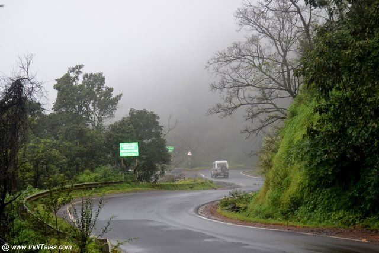
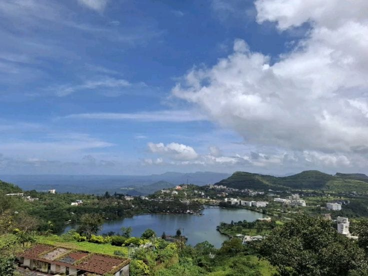
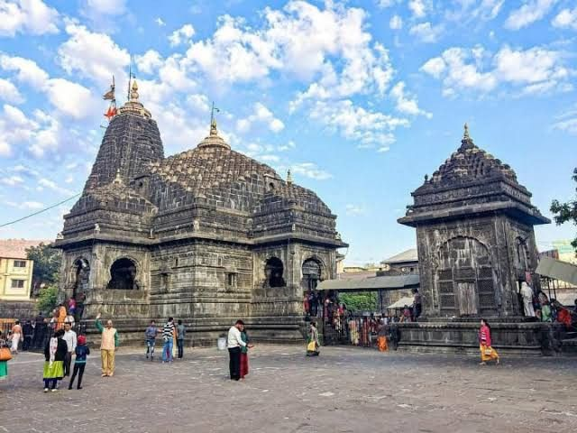

Nature Meets Divinity: A Perfect Road Trip from Saputara to Shirdi
Introduction
In the relentless pace of modern life, finding a sanctuary for both the mind and soul is rare. Recently, I embarked on a family journey that offered exactly that—a perfect blend of misty mountains and spiritual peace.
Our road trip took us from the lush green hills of Saputara in Gujarat to the divine towns of Shirdi and Trimbakeshwar in Maharashtra. This journey was not just about destinations, but about balance—nature and faith, adventure and calm.
The Ascent: Journey to Saputara

Our expedition began with a scenic drive of nearly 5 to 6 hours. As we left behind the city chaos, the highways slowly transformed into a canvas of greenery.
The highlight of the drive was undoubtedly the ghat section. Navigating the winding roads offered an adrenaline rush along with breathtaking valley views. A short halt at a highway dhaba for lunch made the journey even more memorable—because no Indian road trip is complete without dhaba food.
Saputara: The Abode of Serpents

Located on the Gujarat–Maharashtra border, Saputara is a charming hill station that reflects a beautiful cultural blend. We checked into a premium hotel where warm hospitality and peaceful surroundings set the tone for a relaxing stay.
Why Visit Saputara?
The atmosphere here is both energetic and calming. From boating in Saputara Lake to witnessing breathtaking views from Sunset Point, the hill station captivates you with its natural beauty. It is the perfect place to unwind before moving towards the spiritual leg of the journey.
The Spiritual Trail: Shirdi and Trimbakeshwar

Leaving behind the cool climate of Saputara, we descended into Maharashtra towards two of India’s most sacred pilgrimage destinations.
1. The Divine Aura of Shirdi
Our first stop was Shirdi—the holy abode of Sai Baba. As soon as we entered the temple premises, the outside world seemed to disappear. The darshan experience was deeply emotional and calming, leaving us with a sense of peace and gratitude.
2. Trimbakeshwar: A Sacred Architectural Marvel

A short drive from Nashik brought us to Trimbakeshwar, home to one of the twelve sacred Jyotirlingas of Lord Shiva. Nestled at the foothills of the Brahmagiri mountains, the temple is not just spiritually powerful but architecturally stunning.
The energy here feels grounding and timeless, making it a must-visit for devotees and travelers alike.
🗺️ Traveler’s Toolkit (Quick Guide)
- Route: Baroda → Saputara → Shirdi → Trimbakeshwar → Return
- Best Time: Monsoon for lush greenery, Winter for comfortable darshan
- Stay: Saputara offers hotels from budget to luxury (pre-book on weekends)
- Pro Tip: Start your return from Trimbakeshwar early to avoid ghat traffic
Final Thoughts
This journey was more than a vacation—it was a rejuvenation of mind and soul. From the cool winds of the Sahyadri ranges to the sacred chants of Shirdi, this road trip offers the perfect balance of adventure and devotion.
If you’re planning a family trip that combines scenic beauty with spiritual fulfillment, this route deserves a place on your travel list.